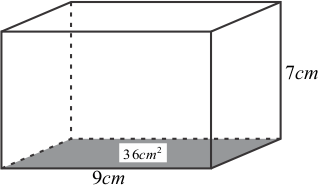
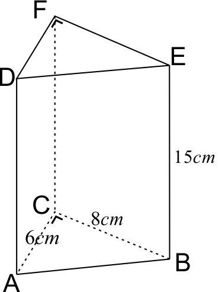

Bangun Ruang Sisi Datar
Bangun ruang sisi datar adalah bangun ruang yang memiliki permukaan datar semua, dengan kata lain tidak da permukaan yang melengkung.

Secara garis besar bangun ruang sisi datar dibagi menjadi 2 yaitu prisma, dimana posisi atap dan alasnya harus sejajar serta keduanya hasrus sebangun, dan limas yaitu bangun ruang yang atapnya adalah sebuah titik.
Dengan demikian, balok dan kubus dapat termasuk dalam keluarga prisma, karena memiliki bentuk alas dan atap yang sebangun.
Volume Prisma

\( V = L.alas \times tinggi \)
Pemahaman mengenai atap dan alas sebuah prisma, tidak harus atap berada di atas dan alas berada dibawah. Namun yang harus kit apahami adalah bentuk bidang yang sebangun pada bangun ruang tersebut.
Untuk gambar (i), jika alas nya \(ABE\), maka atapnya adalah \(CDF\), karena bidang \(CDF\) sebangun dan posisinya sejajar dengan \(ABE\).
Untuk gambar (ii), bidang \(PQTU\) tidak dapat dikatakan sebagai alas karena bidang yang sejajar dengan \(PQTU\) yaitu \(RSUW\) tidak sebangun dengan \(PQTU\). Dari gambar tersebut bidang yang sejajar dan sebangun adalah \(PQRS\) (sebagai alas) dan \(TUVW\) sebagai atap.
Untuk gambar (iii), adalah sebuah kubus. Semua bidang dari kubus dapat dijadikan sebagai alas.
- Jika alasnya \(ABCD\), maka atapnya \(EFGH\).
- Jika alasnya \(ADEH\) maka atapnya \(BCFG\).
- Apabila alasnya \(ABEF\) maka atapnya \(CDGH\).
- Jika alasnya \(ABCD\), maka atapnya \(EFGH\).
- Jika alasnya \(ADEH\) maka atapnya \(BCFG\).
- Apabila alasnya \(ABEF\) maka atapnya \(CDGH\).
Volume Limas

\( V = \frac{1}{3} \times L.alas \times tinggi \)
Alas limas dapat berbentuk bangun datar apa saja, dengan catatan bukan garis lengkung. Alas limas dapat berbentuk segi tiga, segi empat, seegi lima, sampai segi ke-n. pada gambar (i), \(OT\) merupakan tinggi bangun limas, sedangkan pada gambar (ii) yang merupakan tinggi limas adalah \(HO\).
Luas Permukaan Prisma

\( L= (2\times L.alas) + (Kel.alas \times tinggi)\)
Untuk mendapatkan luas permukaan prisma, kita dapat menjumlahkan luas 2 alas, dan luas bidang tegak. Apabila diamati gabungan bidang tegak prisma jika dibentangkan akan membentuk sebuah persegi panjang, dimana sisi panjangnya sama dengan keliling alas, dan lebarnya adalah tinggi dari bangun prisma tersebut.
Kasus di atas adalah kasus prisma segitiga, bagaimana dengan prisma segi empat? Prisma segi empat pada umumnya biasa disebut dengan balok, atau kubus (jika panjang kesebua rusuknya sama).

Luas balok pada dasarnya sama dengan prisma, karen balok merupakan turunan dari prisma. Untuk mendapatkan luas permukaan balok diatas maka
\(=(2\times AB \times BC)+((2(AB+BC))\times AE)\)
Luas Permukaan Limas
Luas permukaan limas erat kaitannya dengan segitiga, karena bidang tegak limas berupa segitiga. Sehingga, tak jarang untuk mencari tinggi dari bidang tegak limas juga melibatkan teorema pythagoras.

\( L.permukaan = (L.alas) + semua \ L.bidang \ tegak \)
Coba perhatikan gambar dibawah ini, bagaimana jika alas limas berbentuk selain persegi. Tentunya untuk menentukan luas permukaan limas, terlebih dahulu harus mengidentifikasi dan untuk menentukan luas alasnya memiliki rumus yang berbeda-beda.

Unsur-unsur yang Terdapat pada Balok


-
Luas permukaan kubus yang memiliki panjang rusuk \(9cm\) adalah ....
Diket:
\(s=9cm\)
Jawab:\(L=L.alas \times 6\)
\(L=(9\times 9) \times 6\)
\(L=81 \times 6\)
\(L=486cm^2\)
Jadi jawaban yang tepat adalah C.
-
Luas alas sebuah kubus adalah \(121cm^2\), jumlah panjang kesemua rusuk kubus adalah ....
Diket:
Luas alas : \(121cm^2\)
Jawab:Panjang rusuk : \(s\times 12\)
\(L. alas = s\times s\)
\(121=s^2\)
\(s^2=121\)
\(s=\sqrt{121}\)
\(s=11cm\)
Panjang rusuk:
\(=s\times 12\)
\(=11\times 12\)
\(=132cm\)
Jadi jawaban yang tepat adalah C.
-
Sebuah balok memiliki luas alas \(36cm^2\). Jika panjang alas balok \(9cm\) dan tinggi balok \(7cm\), maka luas permukaan balok adalah ....
Diket:
Luas alas = \(121cm^2\)
panjang alas = \(9cm\)
tinggi balok = \(7cm\)
Jawab:L.permukaan :
\(=2\times L.alas+Kel.alas\times t\)
\(L.alas=p\times l\)
\(36=9 \times l\)
\(l=\frac{36}{9}\)
\(l=4cm\)
L.permukaan :
\(=2\times L.alas+2(p+l)\times t\)
\(=2\times 36+2(9+4)\times 7\)
\(=72+26\times 7\)
\(=72+184\)
\(=254cm^2\)
Jadi jawaban yang tepat adalah A.
-
Luas permukaan balok yang memiliki panjang \(12cm\), lebar \(8cm\) dan tinggi \(6cm\) adalah ....
Diket:
\(p=12cm\)
\(l=8cm\)
\(t=6cm\)
Jawab:L.permukaan :
\(=2\times L.alas+Kel.alas\times t\)
\(=(2\times p\times l)+(2(p+l)\times t)\)
\(=(2\times 12\times 8)+(2(12+8)\times 6)\)
\(=(2\times 96)+(40\times 6)\)
\(=(192)+(240)\)
\(=432cm^2\)
Jadi jawaban yang tepat adalah B.
-
Luas permukaan bangun di atas adalah ....
Diket:
\(AC=6cm\)
\(BC=8cm\)
\(BE=15cm\)
Jawab:L.permukaan :
\(=2\times L.alas+Kel.alas\times t\)
\(=(2\times p\times l)+(2(p+l)\times t)\)
\(=(2\times 12\times 8)+(2(12+8)\times 6)\)
\(=(2\times 96)+(40\times 6)\)
\(=(192)+(240)\)
\()=\sqrt{432cm^2}\)
$\sqrt{25} $
Jadi jawaban yang tepat adalah B.